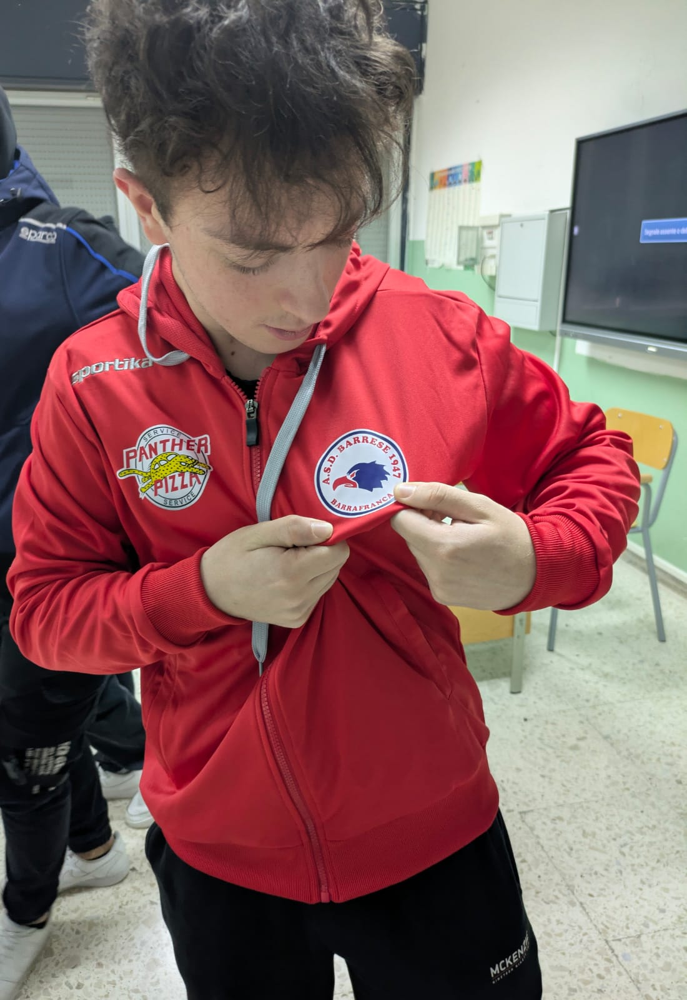

La palestra AS Atlantic è stata fondata da due ragazzi di 18 anni, provenienti da due piccoli paesi della provincia di Enna, in Sicilia. Tutto è partito da un semplice allenamento condiviso nel mondo del calisthenics e, con il passare del tempo, è nata l’idea di costruire una palestra capace di dare ad altre persone uno spazio dove allenarsi bene, crescere e trovare gli attrezzi giusti per migliorare.

Alessio
Fondatore e istruttore di calisthenics
Appassionato di calisthenics, si allena con costanza da due anni e porta in palestra energia, rigore tecnico e un approccio pratico all’allenamento a corpo libero.
Come istruttore, punta a far crescere forza, mobilità e fiducia nei propri mezzi con programmi semplici ma progressivi, adatti sia ai principianti sia a chi vuole migliorare gli skill.
Nella creazione di AS Atlantic ha voluto mettere al centro la comunità, gli allenamenti di gruppo e un ambiente dove fare progressi insieme.
Salvatore
Fondatore, istruttore e trainer di forza
Con cinque anni di esperienza nel calisthenics, combina passione e metodo per aiutare chi si allena a costruire forza reale e tecnica solida.
È specializzato nella creazione di schede di allenamento personalizzate, semplici da seguire, progressive e pensate per ottenere risultati concreti senza complicazioni.
In palestra mette l’accento sul supporto pratico, sul sorriso e sull’atmosfera di gruppo, offrendo attenzione vera ai progressi di ogni persona.